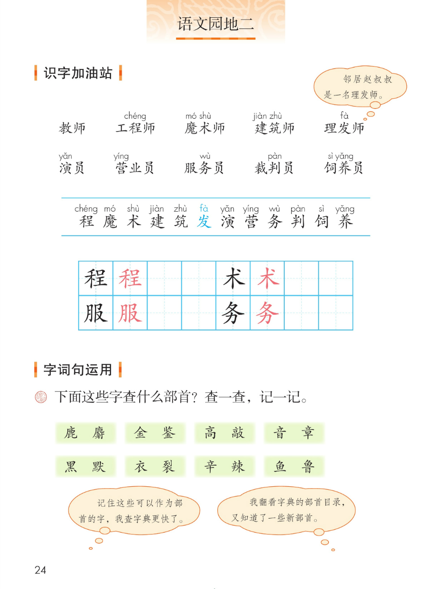
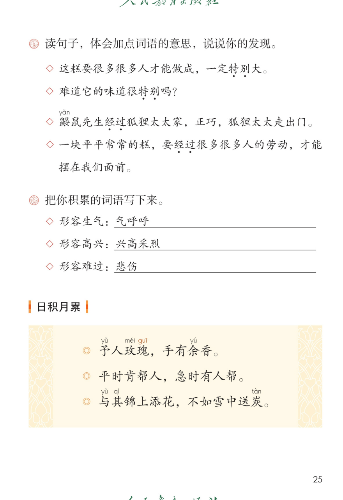
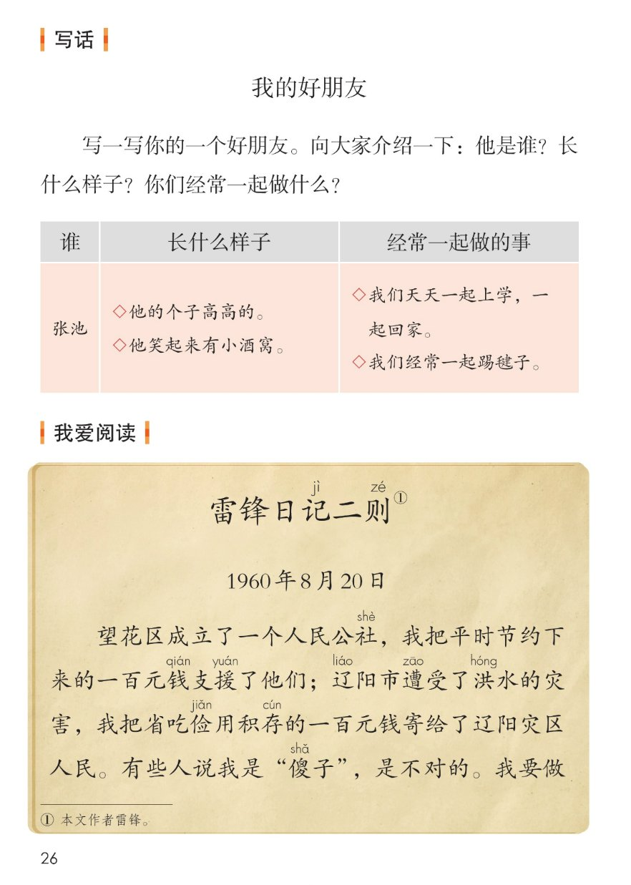
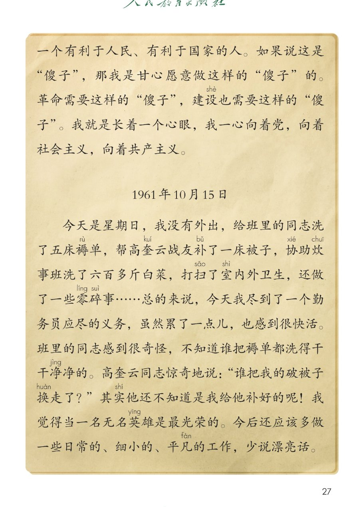
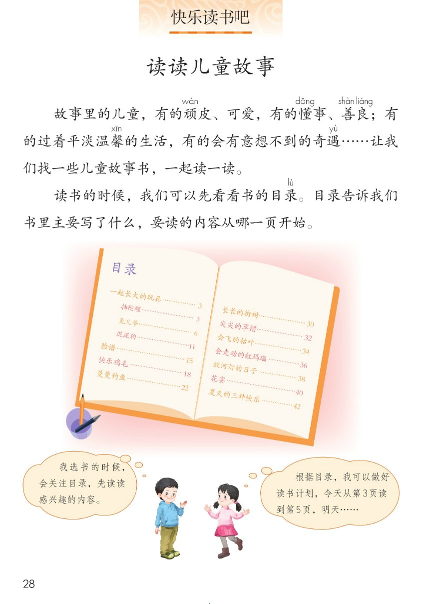

×
🔊 手机听不到声音怎么办？
① 先把手机
媒体音量调大 ，确认没开静音、没连蓝牙耳机；在微信里打开的，点右上角「⋯ → 用浏览器打开」。
② 还是没声音？到应用商店免费下载
Microsoft Edge 浏览器 （它自带朗读发声），用它打开本页面就能出声。
③ 换了 Edge 仍然没声音，说明这部手机的
硬件/系统不支持 网页朗读（多为老旧机型）；近几年买的新手机一般都能正常播放。
→ 打开声音自检
统编版 · 二年级下册 · 第二单元
第二单元 · 关爱与帮助
单元综合课件：语文园地二 · 写话 · 我爱阅读 · 快乐读书吧
职业词 10 个
会认 12 字
会写 4 字
谚语 3 句
闯关 8 题
这个单元学了什么： 三篇课文都在讲关爱与帮助——找那个处处帮助别人的人、数清一块糕里有多少人的劳动、把雨衣让给比自己更弱小的花。
语文园地二把本单元学到的识字、查字典、体会词义、写话、读书 收一收、用一用。课本第 28 页的快乐读书吧·读读儿童故事 紧接在园地二后面，也一并收进本页。点一下任一卡片或句子，就能听。
课本第 24 页
点词听读音，点解释听意思
课本气泡（原话）： 邻居赵叔叔是一名理发师。看一看： 十个词都在说做什么工作的人；前五个带「师」，后五个带「员」。
工程chéng 师
设计机器、房屋、桥梁的人
「程」chéng
魔mó 术shù 师
表演魔术的人
「魔术」mó shù
建jiàn 筑zhù 师
设计房子怎么盖的人
「建筑」jiàn zhù
理发fà 师
给人剪头发的人
「发」fà · 多音字
饲sì 养yǎng 员
喂养、照看动物的人
「饲养」sì yǎng
怎么认： 两条蓝线之间是 12 个要认的字；词里带拼音的那个字，就是这一课新要认的字。先读整词，再把单字挑出来认。
课本第 24 页两条蓝线之间那一行，按课本顺序
田字格：程 术 ／ 服 务（黑色是范字，红色是描红）
蓝色多音字「发」（课本标蓝）： 「理发fà 」读第四声 ；「发现」「出发」读第一声 。读音不同，意思也不一样。
课本第 24~25 页
第 1 题（课本原文）： 下面这些字查什么部首？查一查，记一记。
课本气泡一（原话）： 记住这些可以作为部首的字，我查字典更快了。
课本气泡二（原话）： 我翻看字典的部首目录，又知道了一些新部首。
📌 部首答案供参考，以教材和字典为准 ；这八组的规律是：每组左边那个字本身就是一个部首 。
课本第 25 页
同一个词，在不同句子里意思不一样
题目（课本原文）： 读句子，体会加点词语的意思，说说你的发现。
◇ 第 1 句 · 加点「特别」
这糕要很多很多人才能做成，一定特别 大。
💡 这里的「特别」＝非常、格外 ，说糕大得很。
◇ 第 2 句 · 加点「特别」
难道它的味道很特别 吗？
💡 这里的「特别」＝不一般、与众不同 ，说味道跟别的糕不一样。
◇ 第 3 句 · 加点「经过」
鼹yǎn 鼠先生经过 狐狸太太家，正巧，狐狸太太走出门。
💡 这里的「经过」＝路过、从那儿走过 。
◇ 第 4 句 · 加点「经过」
一块平平常常的糕，要经过 很多很多人的劳动，才能摆在我们面前。
💡 这里的「经过」＝得通过一道道过程 。
我的发现： 「特别」「经过」 这两组词，字一样、意思不一样——这叫一词多义 。读的时候把词放回句子、联系上下文，才知道该取哪个意思。
课本第 25 页
题目（课本原文）： 把你积累的词语写下来。
◇ 形容生气
气呼呼
图上已填的示例；还可以说：怒气冲冲、火冒三丈。
◇ 形容高兴
兴高采烈
图上已填的示例；还可以说：眉开眼笑、欢天喜地。
◇ 形容难过
悲伤
图上已填的示例；还可以说：伤心、闷闷不乐。
📌 三个词是课本图上已经写好的示例 ；横线上本来要自己填，绿底里补的说法是课件给的参考，答案不唯一 。
课本第 25 页
点一句读一句
日积月累 · 三句谚语
都是讲帮助别人、关爱别人的话
予yǔ 人玫méi 瑰gui ，手有余yú 香。
平时肯帮人，急时有人帮。
与yǔ 其qí 锦上添花，不如雪中送炭tàn 。
三句话的意思： 把玫瑰送人，自己手上还留着香；平时肯帮人，自己有急事时也有人帮；与其在别人顺的时候再添好，不如在别人最难的时候 伸手帮一把。
📌 课本只给「予 yǔ 」「玫 méi 」「瑰 gui 」「余 yú 」「与 yǔ 」「其 qí 」「炭 tàn 」注了音；其余字不另加注音。
三个要读准的字（课本注音）
予 yǔ，第三声，是「给」的意思。瑰 gui，玫瑰的瑰读轻声。炭 tàn，第四声，木炭、煤炭。
和本单元连起来看
第 5 课找的，就是平时肯帮人 的人。
第 6 课一块糕里，藏着很多人帮的忙 。
第 7 课萨沙把雨衣让给更弱小的花。
🎯 背诵闯关（三步）
🔊 三句连起来读
第一步： 跟读，一句一句跟着读。第二步： 看提示背，只看每句头两个字。第三步： 合上书背一遍，再对照课本。
课本第 26 页
先填表，再连成几句话
题目（课本原文）： 写一写你的一个好朋友。向大家介绍一下：他是谁？长什么样子？你们经常一起做什么？
谁 长什么样子 经常一起做的事
张池
他的个子高高的。
他笑起来有小酒窝。
我们天天一起上学，一起回家。
我们经常一起踢毽子。
📌 上面这一行是课本第 26 页表格里印好的例子 ；写的时候换成自己的好朋友，三栏都要写到。
照课本表格的三栏说
1
先说是谁
写出好朋友的名字，一句话就够。
「我的好朋友叫张池。」
2
再说长什么样
挑一处最好认的：个子、脸、笑起来的样子。
「他个子高高的，笑起来有小酒窝。」
3
最后说一起做的事
用上「天天」「经常」，写出常一起做的事。
「我们天天一起上学，经常一起踢毽子。」
✍️ 写话小提示
三栏都写到，就不会漏掉题目里的问题。
写样子挑一处 最特别的，不必从头写到脚。
写完自己小声读一遍，看通不通顺。
🌈 答案不唯一
好朋友可以是同学、邻居，也可以是家里人。
一起做的事：看书、跳绳、做手工、喂小动物都行。
写自己真见过、真做过的，最生动。
写清了他是谁 ★ ★ ★
写出了长什么样 ★ ★ ★
写了经常一起做的事 ★ ★ ★
句子通顺，标点用对了 ★ ★ ★
👆 写完给自己打个星：三颗星是很棒，两颗星是还要加油。
记jì 二则zé 》①
课本第 26~27 页
点一段读一段，注音按课本随文照录
读前想一想： 两则日记，第一则 写他把省下来的钱送给需要的人，第二则 写他星期天悄悄替战友洗褥单、补被子。读的时候找一找：他到底做了哪些事？
别人叫他「傻子」，他还说要当这样的「傻子」，为什么？
💡 第一则日记里写着： 「我要做一个有利于人民、有利于国家的人」——他甘心做这样的「傻子」，因为革命和建设都需要肯为别人出力的人。
第二则日记里也写着： 洗褥单、补被子、洗白菜、打扫卫生……虽然累了一点儿，也感到很快活 ；「当一名无名英雄是最光荣的」。
词语积累（取自日记）
省吃俭用 ——平时很节约，不乱花钱积存 ——一点一点攒起来零碎事 ——小小的、杂七杂八的事无名英雄 ——做了好事不留名的人
朗读小提示
日期是日记的一部分，要读清楚。
引号里「傻子」是别人说的话，读得平一点。
最后一句「少说漂亮话」读得稳、读得肯定。
和本单元连起来： 第 5 课沿着小溪小路找 雷锋叔叔，这里读到的就是他自己写的话 ——关爱别人，都藏在一件件平平凡凡的小事里。
课本第 28 页
故事里的儿童，有的顽wán 皮、可爱，有的懂dǒng 事、善shàn 良liáng ；有的过着平淡温馨xīn 的生活，有的会有意想不到的奇遇yù ……让我们找一些儿童故事书，一起读一读。
读书的时候，我们可以先看看书的目录lù 。目录告诉我们书里主要写了什么，要读的内容从哪一页开始。
📌 课本在这两段里只给「顽 wán」「懂 dǒng」「善 shàn」「良 liáng」「馨 xīn」「遇 yù」「录 lù」注音；其余字按课本不另加注音。
照第 28 页目录插图抄录，供参考，以课本为准
📖 左页
一起长大的玩具 3
抽陀螺 3
兔儿爷 6
泥泥狗 11
脸谱 15
快乐鸡毛 18
曼曼钓鱼 22
📖 右页
长长的街树 30
尖尖的草帽 32
会飞的枯叶 34
会走动的红玛瑙 36
放河灯的日子 38
花宴 40
夏天的三种快乐 42
照课本「先看看书的目录」和两个气泡整理
👧 女同学说（课本气泡原话）
根据目录，我可以做好读书计划，今天从第3页读到第5页，明天……
读书三件宝： 看目录 · 挑感兴趣的 · 定个能做到的读书计划。
点选项就判对错，答完自动算分
已经答 0 题，答对 0 题。
点图放大

第 24 页 · 识字加油站 · 查部首

第 25 页 · 加点词语 · 日积月累

第 26 页 · 写话 · 雷锋日记二则

第 27 页 · 雷锋日记二则全文

第 28 页 · 快乐读书吧 读读儿童故事